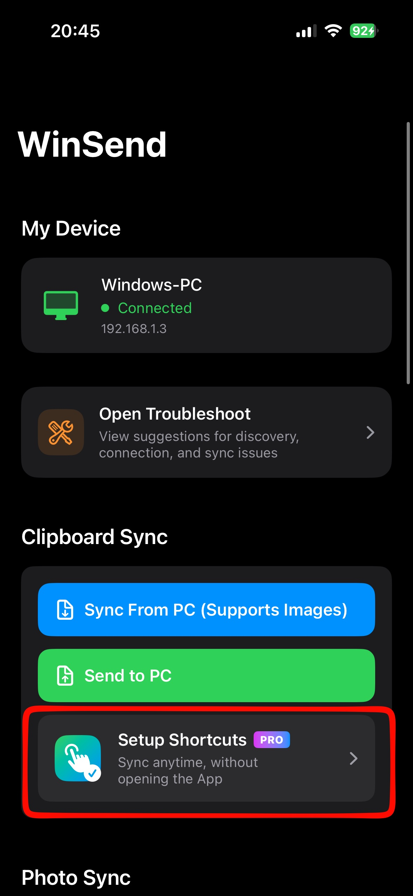
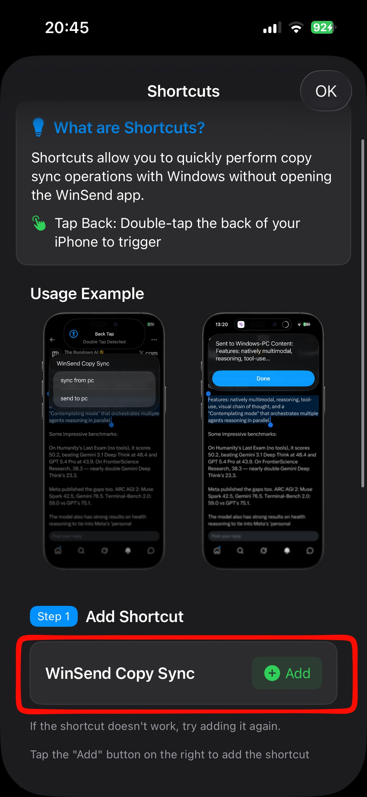
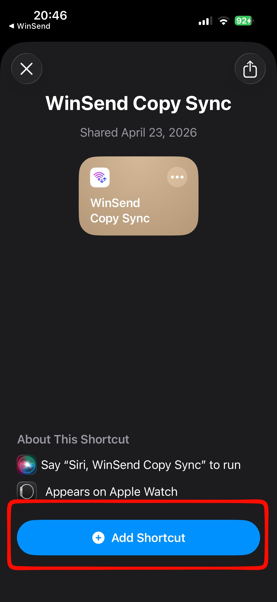
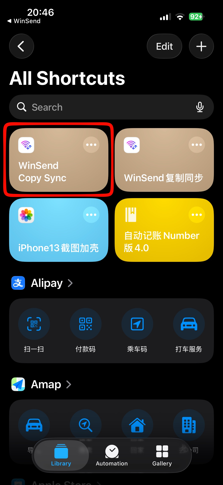
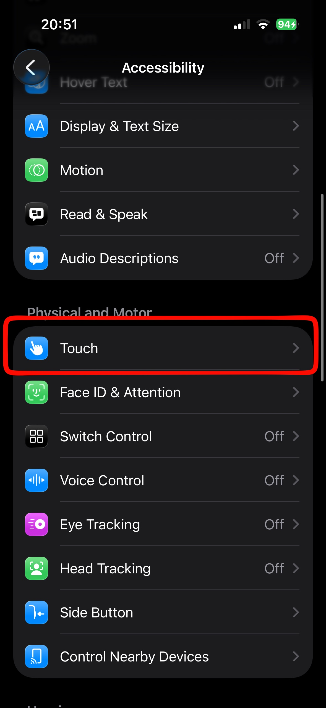
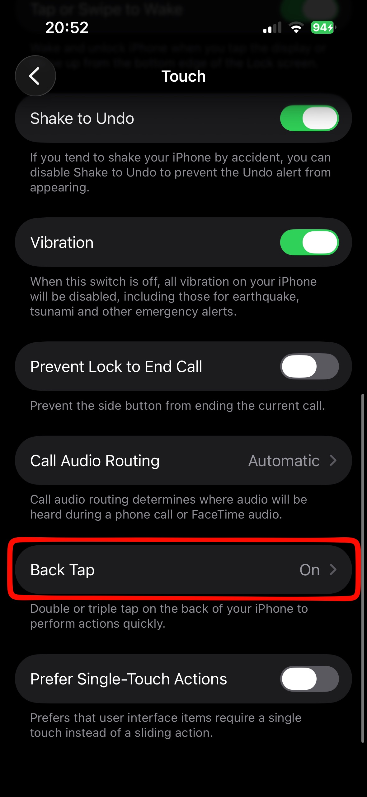
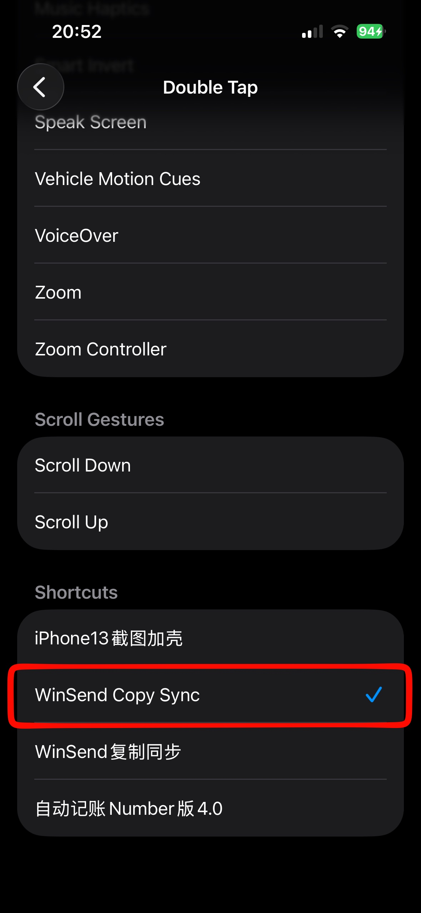

Traditional cross-device transfer software all require opening apps to complete transfer tasks, unable to achieve AirDrop-like seamless copy sync.
WinSend enables clipboard copy and transfer with Windows without opening the app. This is one of WinSend's most intelligent features that distinguishes it from traditional transfer software like LocalSend.
We've achieved the ability to copy and sync in any app with just two taps on the back of the phone. This is currently the closest transfer functionality to AirDrop.
Actual Usage Effect
Below is a practical demonstration
Detailed Setup Tutorial
Install once, use anytime
Step 1: Install WinSend iOS and Windows Client
First ensure both iPhone and Windows are installed and running normally in the same network environment.
Installation process can be found at: WinSend Installation and Pairing Setup
Step 2: Open WinSend App, Enter Shortcuts Setup Page


Step 3: Add Shortcut
Complete shortcut addition through the entry provided in the app. You can view it in the Shortcuts app.


Step 4: Set Up Back Double Tap / Triple Tap Trigger
Bind the newly added shortcut to iPhone's "Back Tap" feature. We recommend trying double tap first. If concerned about accidental triggers, you can also use triple tap.
- 1 Open iPhone "Settings"
- 2 Go to "Accessibility" → "Touch" → "Back Tap"
- 3 Select "Double Tap" or "Triple Tap"
- 4 Find and select "WinSend Copy Sync"
- ✓ After completion, double tap the back of your phone to trigger sync




FAQ
1. Can iPhone and Windows share clipboard?
By default, no.
Apple's Universal Clipboard only supports syncing between iPhone, iPad, and Mac. Windows computers cannot use it directly.
If you're using a Windows PC, you can use WinSend with the AirDrop shortcut to directly paste on your computer after copying content on iPhone.
2. Can AirDrop transfer to Windows computers?
No.
AirDrop only supports transfers between Apple devices, such as iPhone, iPad, and Mac.
If you're using Windows, you can use WinSend as an alternative to quickly transfer text, links, and other content.
3. How to quickly send copied text from iPhone to computer?
You can:
- Copy text/link on iPhone
- Trigger WinSend shortcut
- Directly Ctrl + V to paste on Windows
No need for WeChat, QQ, email, or manually sending to yourself.
4. Must I use WeChat to transfer text between iPhone and Windows?
Not necessarily.
Many people are used to:
- Sending WeChat messages to themselves
- Using QQ File Assistant
- Saving to Notes
- Sending emails
These methods require more steps and are slower.
If you just want to quickly sync text or links, directly sharing clipboard is more convenient.
5. Do I need iCloud to sync clipboard between iPhone and Windows?
No. WinSend does not rely on iCloud and does not require Apple ID.
6. What's the difference between WinSend and AirDrop?
AirDrop is more suitable for devices within the Apple ecosystem.
If you're using:
- iPhone + Windows
- iPhone + PC
WinSend is more suitable for cross-platform scenarios.
7. What's the difference between WinSend and Microsoft Phone Link?
Phone Link has more features but the configuration process is relatively complex. It requires registering and logging into a Microsoft account.
WinSend is more focused on:
- No registration, no login.
- Fast sending.
The operation is more lightweight.